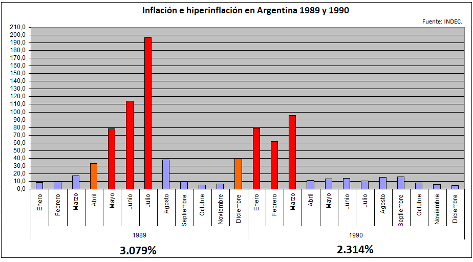

Es el aumento generalizado y sostenido de los precios de los bienes y servicios existentes en el mercado durante un determinado período de tiempo. En Argentina se mantuvo en general en un solo dígito entre 1900 y 1944, aunque con picos de dos dígitos en 1900-1901, 1917-1918, 1920, 1933, y con varios años de alta deflación. El país mide la inflación a través del Índice de precios al consumidor (IPC) que calcula el Instituto Nacional de Estadísticas y Censos (INDEC). Varias provincias tienen sus propios centros oficiales de registro de la inflación en sus territorios. El gobierno que más inflación tuvo en la historia argentina fue el de Raúl Alfonsín (1983-1989), con un promedio anual de 592,28% y un pico hiperinflacionario en 1989 que llegó al 3079,5%. El gobierno que menos inflación tuvo fue el segundo mandato de Carlos Menem (1995-1999), con un promedio anual de 0,025%. La persistencia del fenómeno inflacionario en la economía argentina a lo largo del tiempo, junto con la incapacidad política de combatirla, hace que se un tema de larga data en Argentina con graves daños en el poder adquisitivo de sus ciudadanos a lo largo de su historia.
Este año la tasa de variación anual del IPC en Argentina en agosto de 2023 ha sido del 124,4%, 10,9 puntos superior a la del mes anterior. La variación mensual del IPC (Índice de Precios al Consumo) ha sido del 12,4%, de forma que la inflación acumulada en 2023 es del 80,2%.
Los dos picos hiperinflacionarios sucedieron en dos momentos diferentes, 1989 (presidencia del radical Alfonsín) y 1990 (presidencia de Menem). El primer pico, conocido como hiperinflación del año 1989, comenzó en abril de ese año y pudo ser controlada, en forma temporaria, hacia septiembre de ese año mediante la aplicación del Plan Bonex por el gobierno del presidente Menem que había asumido el 8 de julio de ese mismo año. Con la devaluación del Austral, miles de personas pasaron hacia la pobreza: la hiperinflación devoró salarios, generó revueltas, saqueos y llevó al adelantamiento del traspaso del poder. La hiperinflación a fines del alfonsinismo provocó un aumento en el porcentaje de personas viviendo en la pobreza del 25 % a comienzos de 1989, al récord histórico de 47,3 % en octubre del mismo año. El segundo pico hiperinflacionario, se produjo a comienzos de 1990 y recién pudo ser controlado parcialmente hacia abril de ese año. De todos modos, la inflación continuó siendo muy elevada durante el resto del año. Finalmente, en abril de 1991, mediante la aplicación de la Ley de Convertibilidad del Austral, la inflación pudo ser reducida drásticamente.
Como consecuencia, desde 1960 a la fecha la República Argentina tuvo 5 signos monetarios: peso moneda nacional (m$n), peso ley 18.188 ($ley), peso argentino ($a), austral (₳), peso ($). La relación entre estas da una idea de la elevada inflación promedio de estas últimas décadas: